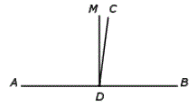
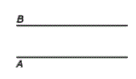
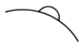

Беседа 3378 от 3877 · Беинса Дуно
Свободен човек
„Отче наш“
Имате ли тема? („Имаме.“) Прочетете. (Прочете се темата „Най-ценното в човешката мисъл“.)
Пишете за следния път „Самовъзпитанието и самообразованието“.
Ще се спра върху мисълта, че човек трябва да бъде свободен. Свободният човек взема една стъпка. Какво подразбирате? Намира се човек в едно почивателно състояние. Свободен си да вземеш една крачка или две крачки. Ако човек вземе една крачка, какво ще постигнете?


Та казвам, яденето е един вътрешен закон за придобиване на онази светлина, сгъстена светлина. Всичките плодове, това е сгъстена светлина. Без светлина човек не може да живее. Човек, който не се храни, не може да живее, разбирам, не може да се прояви. Сега на земята без ръце, без крака може ли да ходите, да работите? Как ще ходите? Някои казват, че човек отвътре може да ходи с мисълта си. Как ще ходиш с мисълта си? И мисълта има крака. Казвам, без крака човек може ли да ходи? Може. Без мисъл човек може ли да мисли? Без желание човек може ли да чувства? Ако нямаш желание, как ще чувстваш? Следователно едно желание може да бъде силно – плюс, може да бъде и слабо – минус. Когато потенциалната страна на желанието е силна, желанието е слабо. Когато кинетичната страна на желанието е силна, тогава желанието е силно. Когато желанието е действие, тогава желанието е силно. Какво разбирате под потенциално състояние? („Непроявено.“) А кинетично състояние?
Сега как трябва да се прояви едно желание? Да кажем, вие сте музикант, имате желанието да вземете „до“. Свирите на цигулката, вземаш тона, но усещаш, че този тон не е правилен. Тогава започваш да нагаждаш с пръста си. С кой пръст вземате „до“ на цигулката? Децата с кой пръст го вземат? С третия пръст на първа позиция. Първата позиция действа на струните, както са. В другите позиции струните се скъсяват. Имате втора позиция, трета, четвърта, пета, шеста, седма, осма. Но в коя позиция се свири най-хубаво една песен? Първата позиция е основата. Цигулар, който не може да свири на първа позиция, и на другите не може да свири. Другите позиции са украшение, нюанси, които се дават. Струните са по-къси. Първата позиция е най-голяма – богаташ, прави най-големи угощения. Другите позиции: […] втора, трета, четвърта, пета, те вземат от първа позиция. Сега вие не може да си представите положението, вземате позициите на цигулката. Това е само за изяснение. Казвате: „Трябва да се изпее една песен.“ Хубаво, кога една песен се пее добре? Кога една нива е посята добре? Нивата е добре орана, добре посята, добре да израсне, добре да даде плод, добре да се пожъне, добре хамбарът да се напълни – тази нива е добра.
Вие сега имате една ваша мисъл, само приготовлявате почвата. Казвате: „Добре изорах нивата.“ Оставите я. Какво ще ви даде тази нива? Вие помагате на бурените. Като сте размесили почвата, всичките тия бурени започват много добре да растат. Следователно, като изорете почвата, ще извадите всичките бурени, ще посеете. Но ако я посеете много гъсто, да кажем с царевица или боб, или жито, ако го насеете много гъсто, няма да имате голямо плодородие, понеже нямате достатъчно храна за растене. Ако много рядко го сеете, ще имате добра храна, но няма да имате голямо изобилие.
Сега вие разглеждате един земеделец, не можете да направите едно отношение между земеделеца и вас. Та вие в себе си имате един земеделец, работите над себе си, работите над вашето сърце. Сърцето на каква площ може да уподобите? Представете си сега, че постъпките на хората представят нивите, желанията на хората представят семето, а мислите – това, което земеделецът може да постигне. То е плодът вече. Но в живота ние вече имаме обработен процес. Постъпките – ти имаш едно желание, което си изпълнил. Имате в себе си една постъпка. Желанията са семето, което трябва да се посее някъде. Казвате: „За какво са желанията?“ Може ли да си представите човек без желания. Каква е разликата между желая и пожелавам? Казва: „Пожелавам.“ Кое е по-силно, пожеланието или желанието? Кое е по-добро, желая или пожелавам? Ж-то е желание, П – това е пожелание. В желанието има широчина. Пожеланието е по-специфично, законът е там. В желанието има изобилие, в пожеланието е друга позиция. Вие съпоставяте коя позиция е пожеланието. Я ми кажете сега. Пожеланието не може да го свириш на първа позиция.
Сега идеята не е още ясна. Неща, които не ги знаете, имат красота. Казвате: „Не го зная.“ Много хубаво. Като не го знаеш, ти се интересуваш, от незнайните работи се интересуваш. Виждаш нещо на хоризонта неопределено, но ти се интересуваш каква линия има, интересува те какво има там. Каква е разликата? Във всички неща в природата има нещо. Във всички неща, които природата е направила, тя е скрила нещо. Във всичките неща природата е скрила една мисъл, има скрито едно желание и има скрита една постъпка във всеки предмет. Вие минавате покрай един камък и го търкаляте. Минавате по пътя, намирате една книжка, заминавате я. Ако вие сте умен човек, като намерите някаква бележка загубена, ще я вземете. Това парченце е хвърлено, но може би в туй малкото парченце се крие вашето щастие. Ако намерите една книжка, хвърлена на земята, една банкнота паднала от пет хиляди лева, един, който не разбира, ще каже: „За какво ми е?“ Ще я хвърли на земята. Който разбира, ще вземе петте хиляди лева, сгънати на четири парчета, ще отвори, ще прочете, ще види, че тази книжка има цена. Но в какво седи цената на тази книжка? Тия хора, които боравят вече с книжката, те са културни хора. Ако влезете в едно общество, дето нямат изгубени книжки, не са писани, те не са културни. Ако намерите всичките книжки, все писани неща имат, хората са културни. Ако по всичките неща няма нищо писано, ще кажете, че тия хора не са културни.
Та казвам, ако вие не знаете как да постигнете едно ваше желание, културни ли сте? Ако не знаете да постигнете едно ваше пожелание, искате да го изпълните, мислите ли, че вие сте културен човек? Не сте разумен човек. Може да е умен човек, може да е интелигентен, но интелигентност имат и животните. Разумността е нещо повече. Аз наричам интелигентността това, което отвътре говори. Нещо те подбужда. И в животните говори умът. Разумността е нещо външно. В разумността има повече светлина. В интелигентността има нещо, което слуша. Ти слушаш нещо, което ти говори. В разумността ти гледаш на нещата. Разумният гледа, а пък интелигентният слуша. Тогава, чрез слушането какво може да разрешите? Каква е разликата между слушането и гледането? Гледаш, че един човек е болен. Външно предполагаш или слушаш, че той ти разправя, че е болен. Каква е разликата? В слушането ти ще вземеш по-голяма интензивност, понеже, като ти говори, ще почувстваш болката. Ако само гледаш, разумно наблюдаваш, няма да влезеш в неговата болка. Щом не ти говори, само обмисляш вътрешните причини, които са произвели болката, коя е причината, защо и за какво е заболял. В слушането самият човек тебе ти разправя как е станало, тази причина на заболяването.
Допуснете, че ние се намираме в едно положение, че не може да се ползваме [от] светлината, боим се от светлината. Ако пуснем светлината, ще кажат, че не изпълняваме закона. Законът е сега такъв, че не трябва да има никаква светлина. Представете си, че малко сме осиромашели, искаме да забогатеем. Не трябва да бъдем разточителни. Трябва да имаме отвътре светлина, не отвън. Казват: „Външната светлина е разточителство, тя не е нужна.“ Много хора сега се ползват, ще им се усилят очите. Едно лекуване е. Много хубаво е за слабите очи, втренчваш се, пращаш повече кръв в очите, искаш да виждаш. Това е здравословно. Ако по-дълго време продължава, ще бъде полезно за очите ви, понеже на някои от вас ще се оправят очите. Най-първо е много тъмно, после започваш да поназърташ нещо. То е ограничение. Казва: „Аз съм свободен.“ Някой току си отваря светлината. То е външната светлина. Хубаво, отива един вълк да граби в някоя кошара, той отваря ли светлина? Като влезе в кошарата в тъмното, избира най-тлъстата овца. Забелязал съм, един сокол толкоз силни очи има, че от десет–двайсет пилета отгоре знае кое пиле е по-хубаво и него грабва. Казвам: този вампир взе най-тлъстото пиле. Като лети горе, не взе слабото пиле, но взе най-тлъстото, най-хубавото задигна. По кой начин позна кое е най-хубавото пиле?
Така вие често правите. Младите правите следната погрешка: този вампир иде, задига най-тлъстото пиле, прави пакост. Един селянин взел, че навързал всичките пилета за крака и после ги свързал за крака на майката, че като дойде орелът, да не може да ги задигне. Дошъл един по-голям орел, че задигнал всичките. То е едното положение. Друг селянин бил по-умен, турил квачката отдолу, турил пилетата отгоре и ги покрил с една мрежа. Завързал я за един колец. Орелът проврял краката си през дупките, хванал доброто пиле, но не може да го извади през дупките, че не му иде на ум да пусне пилето и да извади краката си. Иде селянинът, хваща го, казва: „Този вампир…“ Питам, какво е направил с този вампир? Какво предполагате? Не знаем, то е неизвестно. Може да предположим, че го е претрепал. Може да предположим, че го е пуснал. Каква е вероятността, че го е пуснал. Ако една лисица, която е изяла няколко кокошки, я хванете, ще я пуснете ли? В този случай ще я приемете на гости, ще ѝ съблечете горното палто, другото ще хвърлите навън. Лисичата кожа ще остане за спомен, нея ще я турите като огърлица. Често виждам лисици около врата. Като видя лисица около врата, тълкувам така. Те казват: „Ние напуснахме ония лисичи похвати. Умря в нас това животното, да задигаме кокошки и пилци, умря туй желание.“ Умряло наполовина, защото гледам, очите на лисицата са отворени, гледат към земята още. Тази лисица е само вътре, а очите са още отворени.
Казвам, не желайте в себе си да унищожите вашите желания. Човек да възпитава своите пожелания, а да остави своите естествени желания. Желанието да ядеш, да пиеш вода и всичко, което човек желае, е на място. Но в желанията човек трябва да се пази от пресищане, нямайте еднообразни желания и не мислете за едно и също нещо. Запример, някой те обиди и ти двайсет години носиш обидата в ума си. Казваш: „Обиди ме.“ Кажете ми една благородна дума, от която човек се обижда. Коя е най благородната обида? Вие, учителите – коя е най благородната обида, с която вие обиждате децата? 
Двайсет години вие концентрирате ума си, носите в ума си, че някой ви обидил. Ако казвате дръвник, каква обида има в дръвник? Какво има, че ти си казал дръвник? Онзи, който се обидил, то е еднообразие в природата. Човек не трябва да мисли за едно и също положение. Да допуснем, че пет–десет минути пеете все „до“. Питам, какво ще постигнете? Природата не обича хабене на енергията ѝ. В мислите, в чувствата и в постъпките под възпитание ние разбираме да се не хаби енергията, която е в нас. Никога не хабете енергията на природата. У българите има един навик, като дойдат гости, ще трябва четири–пет пъти да ги каниш, тогава да влязат. Казват: „Бързаме“, но най-после заради ваш хатър влязат и вземат да ядат. Ако сте на гости на един турчин, той казва: „Заповядайте.“ Ако не вземете, оставате гладен. Българинът ще те кани най-малко четири, пет, десет пъти. Сега природата колко пъти кани? Тя никак не кани. Тя нареди всичко на масата и го остави. Като дойдеш ти, сам определяш кое да вземеш. Имаш едно желание, но то е твое. Тя седи настрана, казва: „Туй е за тебе“ и ти опитва ума. Ти като ядеш, тя знае колко си умен. Още като ядеш, знае от коя категория си. След като ядеш и каквото остане го туриш в торбата, тя вече знае от кои си. Ако ядеш и наполовина оставиш яденето недоядено или си направил нещо, че не си спазил правилата ѝ, тя вече има понятие заради тебе. Ти бързаш да ядеш. Че ти определяш характера си. Или бавно ядеш, едва се движиш, не ти е приятно яденето. Във всяка работа, която човек свършва, да има съзнанието, че свършва най-хубавото. Не само [в] яденето.
Та казвам, всяко нещо, което правите, трябва да го правите, както трябва. По някой път мислите. Защо трябва да мислиш? Ако добре мислиш, добре е за тебе, добре е и за другите. Ако постъпваш добре с другите, и за тебе е добре. Законът е много верен. Каквото правиш на другите, ще бъде полезно и за тебе. Ако ти изореш нивата, без да посееш семето, това ще бъде добре за нивата, но няма да бъде добро за тебе, няма да ядеш плод. Мнозина от вас се заблуждавате, искате да се ползвате от труда на другите хора. Човек най-първо трябва да се ползва от своя труд. Ти питаш: „Ти обичаш ли ме?“ Той ти казва: „Това е моя работа.“ Аз обичам ли ви? „То е твоя работа.“ Готов ли си да ми дадеш нещо? „То е моя работа.“ Аз дали съм готов да я приема? „То е твоя работа.“ Сега вие казвате: „Аз ви обичам.“ Някой път вие се заблуждавате, че обичате някого. То е твоя работа. Ти си свърши твоята работа. Що е крив човекът? Що е крива нивата, че си я изорал? Ти казваш: „Тази нива аз изорах. Тя не ми даде това, което аз очаквах.“ Нивата не е виновата. Ако нивата не е дала плода, нивата виновата ли е? Ако ти обичаш нивата, какво ще стане? Ти ще бъдеш здрав. Ако ти обичаш, ти ще бъдеш весел. Ако ти обичаш, всичко ще ти върви наред. Щом не ти върви всичко наред, има нещо, което куца на твоята обич. Който обича, който люби, ако разбирате, всичко ще ви върви. Вие казвате: „Защо сега мене не ми върви?“ Не ви върви, аз ще ви кажа защо. Вие имате цигулка много хубава, една цигулка на Страдивариус, но не сте избрали хубави струни. Лъкът също не е добър. Времето е влажно. Искате да свирите, но тази цигулка не може да ви даде добър звук. Ако цигуларят обича своята цигулка, тя ще бъде турена в подходящо място, ще тури най-хубавите струни, най-хубавия лък. Мястото, дето ще свири, да е сухо. При тия условия няма да има изключения, цигулката ще даде хубав звук.
Ако вие спазвате ония закони, които Бог е положил в света, всичко ще върви добре, както в музиката. Щом не спазваме законите, казваме: „Станало нещо.“ Може да се е разлепила някъде. Понеже има разлепени места, не може да даде хубав тон. Ако вие вземете струната „ми“ и обърнете реда на нещата, турите „сол“ на мястото на „ми“ и турите „ре“ на мястото на „ла“ – обърнете целия ред на цигулката, започнете да свирите, какво ще стане? Ако изтеглите „сол“, както изтегляте „ми“, какво ще стане? Ще се скъса. „Сол“, тази дебелата струна, е направена така, че не търпи голямо изтегляне. Казвате: „Може, може“, но няма да издържи на това напрежение. Когато искаме да изменим този, разумния, ред в природата, който съществува, се случват тия неестествени положения. „Сол“ се къса, „ре“ се къса, всички се късат. Тогава, ако турите „ми“ на мястото на „сол“, ще се скъса, няма да издържи. Нито „сол“ ще свърши работа на мястото на „ми“.
Сега това са обяснения. Всички казват: „Съвършения живот.“ Това, което е вътре в човека, това е съвършеният живот. Защото във всичкия живот е Божественото начало. В голямата дисхармония, която съществува в света, Божественото начало присъства и Бог, Който постоянно организира това, неразумното. Във всяка своя стъпка, каквато и да е, човек ще се ползва. Вие може да се ползвате от работата Му. Някое дете защо го бият? Да допуснем, че някое дете обича да бута плодовете. Веднага ще го нашарят отзад. Значи, когато пипа, има шарене отзад. Детето свързва хубавия плод с болката, която усетило на задницата. Тогава преценяват. В битите деца в миналото болката е по-силна, отколкото яденето. И като види плода, веднага ще изпъкне болката и приятността от яденето. То сравнява – търговска работа. Вижда плода и казва: „Тук нищо няма да спечеля“ и си заминава. Друго дете дойде, вижда плода и казва: „Тук ще спечеля“ и взема плода. После дойде обратният процес. Ние се научаваме в живота как да живеем. Някой път дойдат някои страдания – те са за полза, то е временно. Тези закони ние сме ги създали. Много от съвременните птички дойдат на дървото, кацнат, вземат по една череша. Седи градинарят с пушката и гръмне. Тя не може да си представи как този човек гърми. Той казва: „Ти едно време яде без позволение.“
Сега в самовъзпитанието във вас имате желание да ядете повече. Да допуснем сега, че тебе ти трябва само един самун, една пита. Ти не вземаш един самун, но вземаш два, осигуряваш се. Тръгнеш ти и вземеш в запас. Срещат те на пътя и ти вземат запаса. Тогава с какво си се запасил? Представете си, че вървиш и си взел въздух в едно шише. Сгъстил си го. Дишаш въздуха и вземеш и в запас. Питам, къде имаш условия, като се движиш, да употребиш този въздух? На един от английските крале, който боледувал, донасяли му планински въздух в неговата стая. Щом се движиш в планината, тебе не ти трябва компресиран въздух. Често вие, като влезете в уредения живот, вие се осигурявате. Сигурността на човека зависи от неговата мисъл, сигурността на човека зависи от неговите чувства и зависи от неговите постъпки.
Първото нещо, имайте отношение към законите, които съществуват, към разумните закони. Как ще познаете дали един закон е разумен, или не? Как ще познаете дали една цигулка е добра, или не? Онзи професор, който знае да свири, ще познае. Който не е вещ, няма да познае.
Та казвам, кой е разумният живот? Майстор трябва да бъдеш. Вие искате да знаете права ли е една ваша постъпка. Ако имате музикално ухо, щом чуете един тон, ще знаете прав ли е тонът, или не. Аз, като свиря или друг някой като свири, познавам тона прав ли е, или не. Защо? Има известни качества [в] трептенията, които издава. По трептенията музиката се познава, [по това] колко са прави тоновете. Казвам, разумният човек трябва да познава порядъка, в който се намира, разумен ли е, или не. Имате едно желание, трябва да знаете разумно ли е, или не. Имате една мисъл, трябва да знаете права ли е, или не. Как познавате дали е права вашата мисъл, или не? Щом мисълта е права, има повече светлина. Щом желанието е право, има повече топлина. Щом постъпката е права, ще придобиете повече сила. Но понеже тия трите процеса вървят заедно, правата мисъл предизвиква право желание и правото желание предизвиква права постъпка. Следователно светлината се намира в отношение с топлината и топлината се намира в отношение към силата:
С : Т; Т : П.
Щом мислиш право, ще чувстваш право. Щом чувстваш право, ще постъпваш право. Щом не мислиш право, няма да чувстваш право и няма да постъпваш право. Човек, който мисли право, който чувства право, който постъпва право, той винаги е здрав. За бъдеще това ще бъде лекарство. Щом направиш погрешка, ще изправиш погрешката и болестта ще си иде.
Тия болести: главоболие, ишиас, ревматизъм се дължат или на липса на светлина, или на липса на топлина, или на липса на сила. Сега съвсем другояче обяснявам. Ако влезете в един салон, който е студен, няма и светлина – нямате разположение да свирите. Но ако топлината на салона е умерена, ако има и светлина, цигуларят, като влезе, разположен е да свири. Ако в тебе чувствата не са добре разположени, ако не можеш да мислиш правилно, чувствата ще дадат едно предразположение. Значи, трябва да живееш в една среда, която да тонира чувствата ти, защото в дадения случай, вие, като чувствате, вие сте във връзка не само с живите същества. В дадения случай вие имате едно самочувствие в себе си. Ако вие сте в дисонанс със същества, които са далеч от вас (понеже трептенията на самото чувство са много бързи, да кажем, вие имате една мисъл за едно разумно същество в Америка или някъде другаде), каква е вашата мисъл? Отговорът на вашата мисъл [е] отговорът на вашето чувство. Направете опит, някой път минавате покрай някоя градина, искате да откъснете един плод. После имате едно разсъждение в себе си, казваш: „Не трябваше да откъсвам.“ След като го откъснеш, някое същество в тебе ти казва: „Не трябваше да късаш. Ти трябваше да попиташ този, на когото е градината, да попиташ и това дърво.“ Започваш да философстваш: „То е Божественото. Аз имам свобода.“ Ти имаш свобода, но усещаш една дисхармония в себе си. Ти си свободен да вземеш на цигулката „до“, както искаш, но онези, които те слушат, ще кажат: „Не е вярно.“ „Аз тъй съм се научил.“ „Не е вярно, не е правилен тонът.“
Та казвам, в природата как трябва да постъпваш в даден случай е строго определено. Можеш, като се спреш при крушата, да попиташ Господа: „Господи, туй дърво е Твое.“ Той говори на пазителя. Ти ще попиташ Господа можеш ли да вземеш от дървото. Господ ти казва: „Ще идеш да попиташ господаря на това дърво.“ Ще идеш, ще намериш господаря, ще попиташ. Ако той ти позволи, тогава ще откъснеш. Щом сам си позволяваш, значи поставяш себе си на мястото на Господа и на другите, ти ставаш едно божество. То е заблуждение. Туй дърво не си създал ти. То е плод. Трябва да оцениш, когато минаваш покрай едно дърво: „Аз ценя труда на този човек. Той е работил, природата е работила.“ А пък ако вие живеете според Божиите закони, като минавате през мястото, господарят ще бъде там и той ще ви покани. Ако не сте живели добре, господарят няма да бъде там. Та когато нещата идат сами по себе си, вие живеете в един разумен свят. Когато нещата не стават, както вие искате, вие не сте влезли в онзи разумния свят, дето всичко става тъй, както ние мислим.
За да бъдете здрави, научете се да мислите, че мислите имат отношение към здравето и чувствата имат отношение към здравето, и постъпките имат отношение към здравето. Постъпките имат отношение към тялото, чувствата имат отношение към кръвообращението, а пък мислите имат отношение към електричеството и магнетизма, които текат. Ако мисълта не е правилна, течението на електричеството и магнетизма не е правилно. Ние говорим за растежа на човека. Ако чувствата не са правилни, кръвообращението, дишането не става правилно. Щом постъпките не са прави, в движението има нещо нарушено. Всякога, когато тръгнете да ходите, да знаете дали постъпките [ви] са прави. Като тръгне човек, трябва да знае каква е постъпката му. В желанията си, да знаете правилно ли е желанието. После, да знаете мисълта, която го движи. Всяко нещо, което извършвате, да знаете дали е право, или не. Тогава по-малко енергия ще се хаби.
Използвайте светлината. Вие си представяте следната картина: вие сте в една стая хубаво осветена. Имате запалена печка и стаята е добре отоплена. После имате всичко, което ви е потребно. Отвън колкото и да е лошо времето, ти си доволен, че се намираш в една стая, дето има светлина, топлина, пък има и достатъчно храна, да прекарате зимата.
„Само светлият път на мъдростта води към истината. В истината с скрит животът.“
Двадесет и четвърта лекция на младежкия клас
18 април 1941 г., петък, 5 ч. сутринта
София – Изгрев